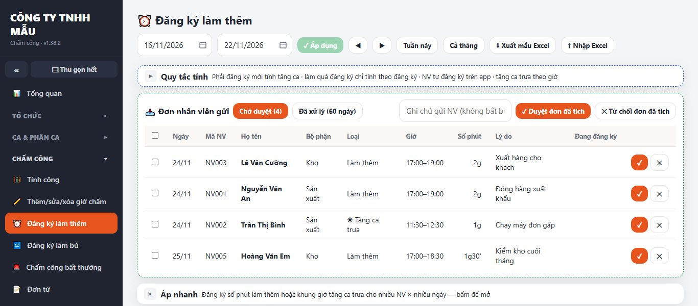
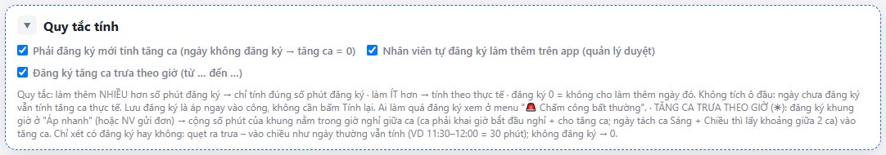
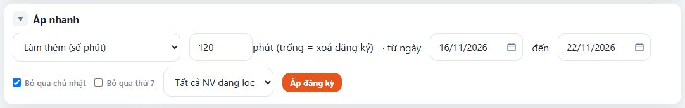
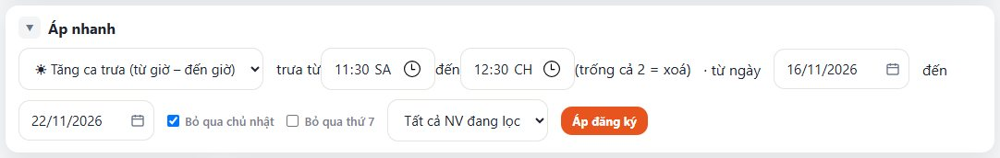
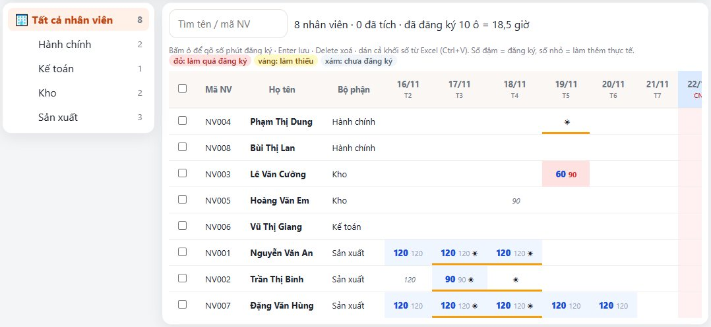
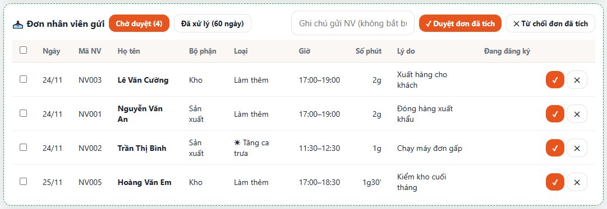
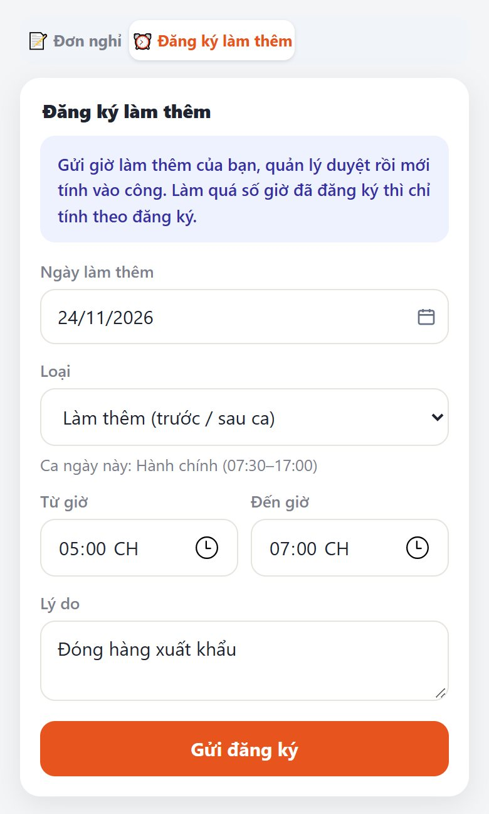
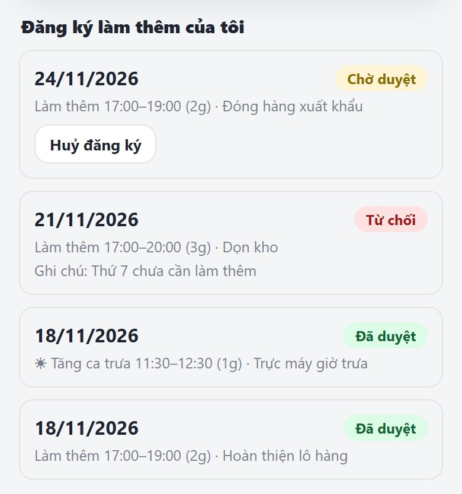

Đăng ký làm thêm tính thế nào
Mỗi nhân viên, mỗi ngày có một số phút đăng ký làm thêm. Phần mềm so giờ làm thêm thực tế (theo giờ chấm) với số đăng ký và tính tăng ca như bảng dưới.
| Trường hợp | Tăng ca được tính | Ví dụ (ca hết 17:00) |
|---|---|---|
| Làm NHIỀU hơn đăng ký | Chỉ tính đúng số phút đã đăng ký | Đăng ký 120 phút, về 19:30 → tính 120 |
| Làm ÍT hơn đăng ký | Tính theo thực tế | Đăng ký 120 phút, về 18:30 → tính 90 |
| Đăng ký 0 phút | Không cho làm thêm ngày đó | Ở lại tới 19:00 → tính 0 |
| Không đăng ký, có tích "Phải đăng ký mới tính tăng ca" | Tăng ca = 0 | Về 19:00 → tính 0 |
| Không đăng ký, không tích ô trên | Tính theo thực tế như khi chưa dùng đăng ký | Về 19:00 → tính 120 |
| Tăng ca trưa (khi bật) | Có đăng ký khung giờ trưa mới tính, cộng thêm vào tăng ca | Đăng ký 11:30–12:30 → cộng 60 |
Bật các ô quy tắc
Menu bên trái: Chấm công › ⏰ Đăng ký làm thêm.

- Bấm "▶ Quy tắc tính" để mở khung.Cần tài khoản có quyền Cài đặt. Mỗi lần tích / bỏ tích, phần mềm hỏi lại rồi áp cho cả dữ liệu đã có.
- Phải đăng ký mới tính tăng caTích: ngày nào không đăng ký thì tăng ca = 0, nhân viên ở lại lố giờ không thành tăng ca. Không tích: ngày chưa đăng ký vẫn tính tăng ca thực tế.
- Nhân viên tự đăng ký làm thêm trên app (quản lý duyệt)App điện thoại của nhân viên hiện nút ⏰ Đăng ký làm thêm. Đơn gửi lên chờ quản lý duyệt ở trang này (mục 5).
- Đăng ký tăng ca trưa theo giờ (từ … đến …)Thêm loại ☀ Tăng ca trưa: đăng ký khung giờ (VD 11:30–12:30) thay vì số phút. Cách tính xem mục 9.

Đăng ký cho nhiều người một lúc (Áp nhanh)
Dùng khi cả tổ, cả phòng làm thêm giống nhau nhiều ngày. Muốn áp cho một phòng ban: bấm tên phòng ở cột trái của lưới trước, hoặc tích chọn từng người.
Đăng ký làm thêm (số phút)
- Bấm "▶ Áp nhanh".Ô Loại để Làm thêm (số phút).
- Gõ số phút mỗi ngày.VD 120 = 2 giờ. Để trống = xoá đăng ký những ngày đó.
- Chọn từ ngày – đến ngày.Tích "Bỏ qua chủ nhật" / "Bỏ qua thứ 7" nếu những ngày đó không làm thêm.
- Chọn áp cho ai rồi bấm Áp đăng ký."Tất cả NV đang lọc" (theo phòng ban, ô tìm kiếm) hoặc "Chỉ NV đã tích" ở lưới.

Đăng ký tăng ca trưa (khung giờ)
- Ô Loại chọn "☀ Tăng ca trưa (từ giờ – đến giờ)".Chỉ có khi đã bật ô thứ ba ở mục 2.
- Nhập trưa từ … đến …VD 11:30 đến 12:30 = 60 phút. Để trống cả 2 ô = xoá tăng ca trưa những ngày đó.
- Chọn ngày, chọn người, bấm Áp đăng ký.Mỗi người mỗi ngày có 1 khung trưa; áp lại là thay khung cũ.

Sửa từng ô · nhập Excel
Lưới bên dưới trang: mỗi dòng một nhân viên, mỗi cột một ngày. Xem tối đa 31 ngày một lần (nút Tuần này, Cả tháng, ◀ ▶).

- Sửa một ô: bấm vào ô, gõ số phút, Enter để lưu, Delete để xoá đăng ký.
- Dán từ Excel: copy một khối số trong Excel, bấm ô góc trên bên trái trên lưới rồi Ctrl+V.
- Màu ô: đỏ = làm quá đăng ký · vàng = làm thiếu · xám = có làm thêm mà chưa đăng ký.
- Tăng ca trưa: rê chuột lên ô có ☀ để xem khung giờ. Sửa khung trưa bằng Áp nhanh (mục 3).
- Excel cả tháng: bấm ⬇ Xuất mẫu Excel (nhân viên đang lọc × các ngày đang xem), điền số phút rồi ⬆ Nhập Excel. File Excel chỉ có số phút làm thêm; khung tăng ca trưa đăng ký bằng Áp nhanh.
Duyệt đơn nhân viên gửi
Khi bật "Nhân viên tự đăng ký làm thêm trên app", đầu trang có khung 📥 Đơn nhân viên gửi. Người có quyền sửa chấm công nhận thông báo khi có đơn mới.

- Xem đơn ở tab "Chờ duyệt".Có ngày, giờ, số phút, lý do. Tab "Đã xử lý (60 ngày)" để xem lại đơn đã duyệt hoặc từ chối.
- Duyệt từng đơn bằng ✓, từ chối bằng ✕.Hoặc tích nhiều đơn rồi bấm "✓ Duyệt đơn đã tích" / "✕ Từ chối đơn đã tích". Ô ghi chú (không bắt buộc) gửi kèm cho nhân viên.
- Kết quả vào công ngay.Duyệt đơn làm thêm = cộng số phút vào đăng ký của ngày (đã có 60, duyệt thêm đơn 120 → 180). Duyệt đơn tăng ca trưa = ghi khung giờ trưa của ngày. Nhân viên nhận thông báo được duyệt hay bị từ chối.
Gửi đăng ký làm thêm
- Mở app chấm công, chọn tab 📝 Đơn từ.Bấm nút ⏰ Đăng ký làm thêm ở đầu trang. Không thấy nút này là công ty chưa bật, hỏi quản lý.
- Chọn ngày làm thêm.Gửi được cho ngày trong khoảng 31 ngày trước tới 93 ngày tới. Dưới ô Loại hiện ca của ngày đó.
- Loại: "Làm thêm (trước / sau ca)".Ô Từ giờ tự điền giờ hết ca. Nhập Đến giờ, VD 17:00 → 19:00 = 2 giờ.
- Ghi lý do rồi bấm Gửi đăng ký.Đơn ở trạng thái Chờ duyệt. Quản lý duyệt xong mới tính vào công.

Đăng ký tăng ca trưa
- Cũng ở ⏰ Đăng ký làm thêm, ô Loại chọn "☀ Tăng ca trưa".Chỉ có khi công ty bật tăng ca trưa theo giờ.
- Kiểm tra giờ.Từ giờ – Đến giờ tự điền theo giờ nghỉ trưa của ca (VD 11:30–13:00). Sửa lại đúng khung được giao, VD 11:30–12:30.
- Ghi lý do, bấm Gửi đăng ký.Mỗi ngày 1 đơn tăng ca trưa, tối đa 4 giờ. Muốn đổi giờ thì huỷ đơn đang chờ rồi gửi lại.
Theo dõi đơn đã gửi
Ngay dưới form là mục Đăng ký làm thêm của tôi.
- Chờ duyệt: còn huỷ được bằng nút "Huỷ đăng ký".
- Đã duyệt: đã tính vào công. Muốn sửa thì báo quản lý.
- Từ chối: xem dòng "Ghi chú" quản lý gửi kèm. Có thể gửi đơn khác.
Điện thoại có bật thông báo thì nhân viên nhận tin ngay khi đơn được duyệt hoặc bị từ chối.

Tăng ca trưa tính thế nào
Ví dụ ca 07:30–17:00, nghỉ trưa 11:30–13:00. Nhân viên ngày nào cũng quẹt 4 lần: 07:10 · ra 11:32 · vào 12:58 · 17:05.
| Đăng ký tăng ca trưa | Tăng ca trưa được tính |
|---|---|
| Không đăng ký | 0. Ngày công bình thường. |
| 11:30–12:00 | 30 phút |
| 11:30–12:30 | 60 phút |
| 11:00–14:00 | 90 phút: chỉ phần nằm trong giờ nghỉ 11:30–13:00. Phần trùng giờ làm trong ca đã là giờ công, không tính 2 lần. |
- Lượt quẹt ra trưa, vào chiều không làm thay đổi kết quả. Phần mềm chỉ xét có đăng ký hay không, trong khoảng từ lượt vào đầu ngày tới lượt ra cuối ngày. Nghỉ cả buổi chiều thì phần sau giờ về không được tính.
- Cộng thêm, không trừ vào đăng ký làm thêm. Đăng ký làm thêm 120 phút + trưa 11:30–12:30, làm tới 19:00 → tăng ca 180 phút.
- Ca chia Sáng + Chiều (ngày quẹt 4 lần phần mềm tách thành 2 dòng ca Sáng và ca Chiều): giờ trưa là khoảng giữa giờ hết ca Sáng và giờ vào ca Chiều; tăng ca trưa cộng vào dòng ca Chiều.
- Có tích "Phải đăng ký mới tính tăng ca" hay không, tăng ca trưa vẫn chỉ tính khi có đăng ký khung giờ trưa.
Câu hỏi thường gặp
Nhân viên không thấy nút "⏰ Đăng ký làm thêm" trên app?
Công ty chưa tích ô "Nhân viên tự đăng ký làm thêm trên app" (mục 2). Nhân viên tính lương theo giờ không có tăng ca nên cũng không có nút này. Đã bật rồi thì bảo nhân viên đóng app mở lại.
Không có loại "☀ Tăng ca trưa" để chọn?
Chưa tích ô "Đăng ký tăng ca trưa theo giờ" ở khung Quy tắc tính.
Đã đăng ký mà tăng ca vẫn bằng 0?
Kiểm tra: ca có tích "Cho phép tính tăng ca cho ca này" không; ngày đó đã có giờ ra chưa; thời gian ở lại có ít hơn ô "Ở lại sau giờ ra tối thiểu" của ca không (mặc định 30 phút). Tăng ca trưa thì ca phải có giờ nghỉ giữa ca.
Sửa đăng ký xong có phải bấm Tính lại công không?
Không. Lưu ô, áp nhanh, nhập Excel hay duyệt đơn đều áp ngay vào công.
Xem ai làm quá giờ đăng ký ở đâu?
Ô màu đỏ trên lưới, hoặc menu "🚨 Chấm công bất thường" để xem và xuất danh sách.
Duyệt 2 đơn làm thêm cùng một ngày thì sao?
Số phút cộng dồn vào đăng ký của ngày đó (tối đa 24 giờ). Tăng ca trưa thì mỗi ngày 1 khung.
Tắt ô "Đăng ký tăng ca trưa theo giờ" thì sao?
Các khung trưa đã đăng ký không còn được cộng vào tăng ca. Bật lại thì được tính như cũ.